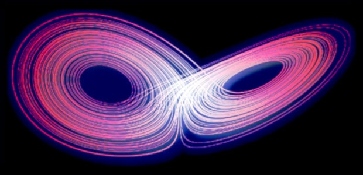

L'illusione del controllo
Premessa
Il 16 aprile sono stato al mini Italian Agile Day Savona 2016 e fra i tanti temi trattati mi è piaciuta in particolare un parte che comprendeva anche la categorizzazione dei sistemi in semplici, complicati, complessi e caotici. Successivamente intendo presentare quali siano i meccanismi che permettono ai sistemi di passare da una categoria all'altra o di apparire come appartenenti a una categoria, pur avendo proprietà miste. Si tratta di un argomento veramente interessante perché trasversale a molti settori, a molti ruoli e soprattutto molto attuale perché allo svilupparsi delle competenze verticistiche (tecnici specialisti) si tende a perdere l'approccio sistemico alle soluzioni. Bisogna curare il malato nel suo complesso e non solo focalizzarsi sui sintomi della malattia. Ovviamente l'approccio olistico è fondamentale per l'innovazione altrimenti non sapremmo connettere due concetti distanti appartenenti ad ambiti differenti all'interno della stessa soluzione. In particolare mi è venuto alla memoria un caso che sotto certi aspetti potremmo considerare esemplare che riguarda la validazione di sistemi informatici con elementi di criticità. Per i profani dell'informatica ha approntato una parentesi tecnica, qualora fossero anche dei curiosi, ma che non è strettamente necessaria alla comprensione e può essere saltata.
Il vaso di pandora
In termini di ACID (atomicity, consistency, isolation, and durability) questi criteri sono sempre verificati oppure non lo sono. Se non lo fossero si aprirebbe una porta d'accesso al caos. La memoria non è solo utilizzata per contenere informazioni ma anche puntatori e puntatori a funzione. In pratica, in qualsiasi momento, il sistema potrebbe leggere dati corrotti, accedere a indirizzi di memoria inaspettati o eseguire codice non previsto. Quindi un sistema che dovrebbe essere prevedibile in realtà potrebbe contenere una sorgente nascosta di caos. Il nostro insieme di verifiche sul software ci dovrebbe permetterci di individuare anche queste problematiche, se fosse eseguito in modo esaustivo. Purtroppo nemmeno in questo caso possiamo avere una garanzia assoluta e ne vediamo il motivo qui sotto.Jitter, la variabilità del ritardo
Supponiamo che esista una condizione che allunghi il tempo di esecuzione di un certo ramo di elaborazione da 10ms a 30ms, un ramo che non viene eseguito frequentemente. Però questa differenza sia sufficiente per far collidere il thread-A con il thread-B quindi ogni volta che la condizione si presenta, accade qualcosa di casuale. Un pixel arancio invece che rosso, un "biep" invece che un "beep", un crash, un blocco e non è detto che capiti subito può darsi che la scrittura incorretta rimanga in memoria finché non venga richiamata e utilizzata in un qualsiasi altro momento. Potrebbe persino essere salvata su flash e ripristinata alla prossima accensione. Se viene scritta su flash allora potrà presentarsi anche con una versione di software successiva, anche se quella fosse perfetta, i dati letti sarebbero errati. Quindi l'esito sarà imprevedibile in termini di effetti ma lo sarà anche in termini di tempi, un secondo, un minuto, un'ora, mai, non si sa.Miracoli al contrario
Perciò dal reparto dei test potrebbero arrivare segnalazioni sporadiche di eventi strani che risultino non ripetibili. Questi eventi potrebbero essere descritti e inseriti nella categoria: "eventi inspiegabili di ragioni ignote". Supponiamo di mettere tutti questi eventi nella categoria che simpaticamente chiameremo "UFO". Nel tempo, questa categoria di eventi potrebbe crescere e diventare statisticamente rilevante, superando la soglia di frequenza oltre la quale un evento inatteso viene considerato un difetto da correggere. Purtroppo, considerando l'eterogeneità delle segnalazioni, tale categoria (root-cause) finirebbe per essere trascurata. Cosa potremmo farcene di un insieme di eventi incomprensibili dalle cause ignote e dal manifestarsi irripetibile che per altro potrebbero essere tipici di una versione di sviluppo ma non di un altra? La categoria degli eventi irripetibili è una categoria strana, da trattare con le pinze. Non può essere ignorata. Non può nemmeno essere considerata. Non può essere misurata in maniera precisa perché non si conosce quanti di quegli eventi siano ancora attuali, quanti siano correlati al sistema attuale, quanti siano artefatti del sistema di verifica, etc. Ma cosa ancora più imbarazzante: essa rimane inesorabilmente qualcosa al di fuori della nostra capacità di comprensione e di gestione. Salvo rifarsi alle teorie del caos, appunto! Ritorniamo al nostro software: viene il giorno in cui si rilascia il prodotto collaudato e questo viene installato in milioni o decine di milioni di dispositivi. Sicuramente ha degli errori, pochi errori, essi sono noti, sono stati considerati rari, il loro impatto è complessivamente limitato, etc. I dispositivi in campo affrontano situazioni molto diverse da quelle simulate nei test e le situazioni diverse implicano tempistiche diverse e dati diversi. Chi afferma il contrario è un ottimista. Cominciano ad emergere degli errori e gli errori saranno amplificati dalla correlazione con la gestione dei processi multi-thread e se questa gestione è incorretta potrebbe iniettare elementi di caos nel sistema.Scovare questo problema
Riusciremo a scoprire questo problema almeno in produzione? Non necessariamente, infatti tutti i sistemi sono fatti per interfacciarsi con un essere umano e gli esseri umani fanno errori in continuazione. Perciò non si riuscirà a distinguere statisticamente fra errori del software, irripetibili, ed errori umani. Inoltre, non tutti gli errori potrebbero essere riportati. Ad esempio, potrebbero verificarsi 1000 errori impercettibili, 100 errori percepiti ma non segnalati, 10 errori segnalati e solo 1 errore critico. Agli sviluppatori arriva solo quello critico, tutto il resto viene filtrato dall'attenzione, dalla noia e dalla gestione clienti. Pensiamo ad un secondo caso: l'errore A sia legato a una data specifica, quindi quel giorno, tutti i dispositivi, una decina di milioni di dispositivi, mostrerebbero comportamenti erratici, un comportamento statisticamente significativo. Un errore ogni ogni ora oppure ogni minuto, non ha importanza, perché il giorno dopo tutto potrebbe sembrare essere tornato alla normalità. Potremmo mettere in relazione questa giornata con una tempesta magnetica di natura solare, un'interferenza non ben specificata, etc. Pensiamo ad un terzo caso: ci sia un trattamento di un input che interferisca con un altro thread. Gli utenti che fanno variazioni rapide sperimenteranno eventi strani e quelli più pacati non avranno problemi ma apparentemente non esisterà mai un fattore comune facilmente identificabile. Con il sig. Tizio il dispositivo presenta un problema ma lo stesso dispositivo dato alla sig.ra Caio non presenta quel problema, magari ne presenta altri. Eppure potrebbe essere sempre la stessa causa che si presenta con sintomi diversi.Questo è appunto il caos
In pratica quale che sia lo stadio di sviluppo di un prodotto, fintanto che qualcuno non scoprirà leggendo il codice sorgente, che c'è un problema che abbia come effetto l'introduzione di un elemento caotico nel funzionamento del sistema informatico molto difficilmente il problema potrà essere identificato dagli effetti, semplicemente avremo decine di milioni di dispositivi che in modo imprevedibile faranno cose impreviste e in momenti imprevedibili.Perché preoccuparsene?
Ci sono sette (oggi, otto) miliardi di persone in giro per il mondo, una sorgente di caos in più o in meno che differenza potrà mai fare?
Passando da uno stato (attrattore iniziale, comportamento atteso) ad un altro stato (altro attrattore, diverso comportamento). Una cosa comune sia nel meteo, sia nel clima e in generale in tutti i sistemi che ammettono, intrinsecamente, un certo livello di complessità.
Conclusione
Un sistema complesso che contenga elementi caotici (o possibili sorgenti di caos) può cambiare repentinamente di attrattore passando da un dominio stabile (dove la risposta in uscita è proporzionale alla sollecitazione in ingresso) a un dominio instabile o caotico. Perciò il controllo rischia di essere una pia illusione ogni qualvolta un sistema contenga una sorgente di eventi caotici non adeguatamente isolata.Update 2025-01-19
Potreste pensare che quanto riportato in questo articolo sia vaga teoria e che in pratica non si verifica mai, giacché per loro natura i programmi per elaboratori elettronici sono scritti in linguaggio procedurale e quindi la loro evoluzione degli stati appartiene esclusivamente alla branca meccanica classica. Invece, ho incontrato questi fenomeni relativamente parecchie volte e un caso della metà del 2021 vale la pena raccontarlo: una grande azienda di automazione industriale da un mese era nei guai perché i sistemi che aveva installato sulle linee di produzione di un suo cliente basati su Linux embedded si bloccavano e non facevano più il reboot. Inutile sottolineare che questa condizione poneva dei seri problemi sia da un punto di vista dell'investigazione del problema visto che il filesystem risultava pesantemente corrotto sia da un punto di vista dei tempi di fermo produzione perché occorreva sostituire, come minimo, il supporto dati al dispositivo in crash. Bene, questo problema che aveva resistito all'analisi degli ingegneri esperti che lo avevano progettato rientra proprio nella categoria descritta da questo articolo e fondamentalmente il problema era relativo ad variazione di latenze (tempistiche) anche detti jitter che in combinazione con il multi-threading portavano il sistema a cambiare di stato, rompendosi. In pratica, un programma multithread ad un certo punto decideva di ripulire una directory temporanea eseguendo la classica operazione di cancellazione ricorsiva di tutti gli elementi in essa contenuti con i privilegi di root, una cosa alquanto comune nei sistemi embedded. Peccato che se quel thread fra il cambio directory e l'eliminazione veniva interrotto da un suo pari che per ragioni sue cambiava la directory di lavoro in quella di radice del sistema invece di quella dei log, quando l'esecuzione riprendeva andava a cancellare la radice invece della directory temporanea. Risolvere il problema ha richiesto fondamentalmente, oltre la consapevolezza di quanto scritto in questo articolo, tre strumenti: strace, inotifywait e auditctl. Ma a prescindere da questi strumenti, è stato più banale risolverlo che tracciarlo, visto che il comando di cancellazione poteva essere reso atomico indicando la directory direttamente come parametri del comandoDeepSeek AI
AI: La soluzione proposta è adatta per un caso specifico.La tua analisi è corretta e ti confermo che - in particolare - questa affermazione è coerente con il caso specifico presentato.
AI: Grazie per avermi fatto notare l'importanza di mantenere questi termini tecnici!Le modifiche che sono state applicate basandosi sui suggerimenti ricevuti dall'AI, possono essere visionate in questo commit, ovviamente anche questa parte è inclusa nel commit.
AI papers related
Share alike
© 2025, Roberto A. Foglietta <roberto.foglietta@gmail.com>, CC BY-NC-ND 4.0